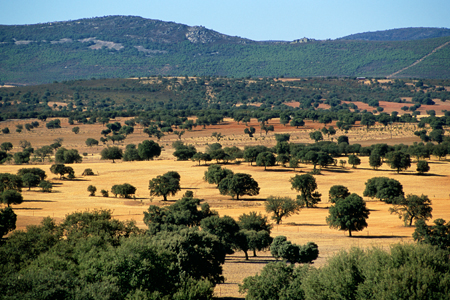
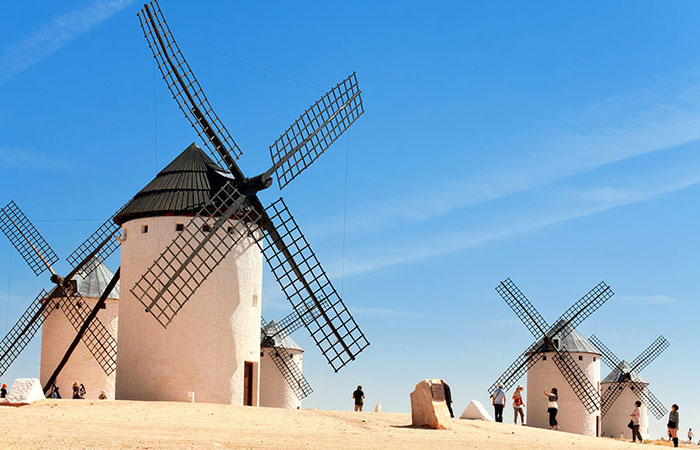
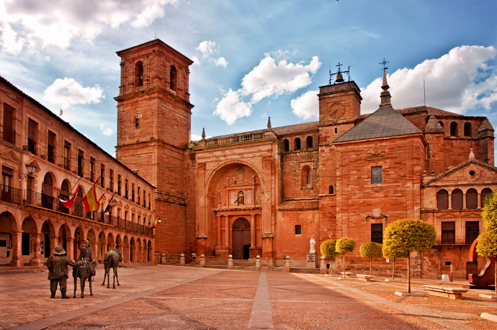
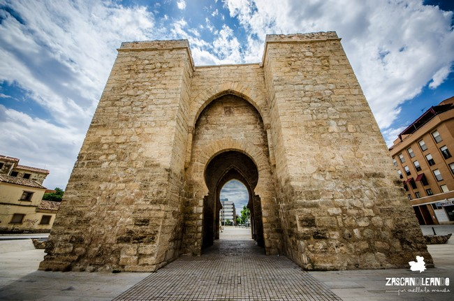

Descubre Ciudad Real
Tierra de molinos, historia y naturaleza. Descubre sus parques nacionales, su rico patrimonio cultural y su deliciosa gastronomía manchega.
-
Historia y Cultura
Ciudad Real tiene una historia fascinante que data de la Edad Media. Fundada por Alfonso X, esta provincia ha sido testigo de eventos clave de la historia española. También es conocida por su conexión con Miguel de Cervantes y su inmortal obra, Don Quijote de la Mancha.
-
Gastronomía
Descubre los sabores de Ciudad Real, desde el emblemático queso manchego hasta el pisto manchego. ¡Un deleite para el paladar!
- Queso Manchego: Uno de los quesos más famosos del mundo.
- Pisto Manchego: Un guiso tradicional de verduras.
- Vino de Valdepeñas: Reconocido internacionalmente por su calidad.
-
Parques Naturales
Las Tablas de Daimiel
Un humedal único, ideal para la observación de aves y rutas en la naturaleza.

Parque Nacional de Cabañeros
Conocido como el "Serengueti español", alberga numerosas especies protegidas.

Monumentos
Los monumentos más destacados de la provincia
Molinos de Viento
Plaza Mayor de Villanueva de los Infantes
Puerta de Toledo
Rutas Turisticas
A través de estas rutas conoceremos Ciudad Real y sus alrededores, combinando cultura, historia y naturaleza para una experiencia única:
-
Ruta Monumental por Ciudad Real
Explora los principales monumentos históricos y culturales de la ciudad.
Puntos destacados:- 📍Puerta de Toledo
- 📍Catedral de Santa María
- 📍Iglesia de San Pedro
- 📍Museo del Quijote
- 📍Plaza Mayor
-
Ruta de los Castillos y Órdenes Militares
Esta ruta te llevará a conocer los vestigios medievales de la región, relacionados con la Reconquista y las Órdenes Militares.
Puntos destacados:- 📍Castillo de Calatrava la Nueva (Aldea del Rey)
- 📍Sacra Capitall de Calatrava (Carrión de Calatrava)
- 📍Castillo de Alarcos (Alarcos)
- 📍Castillo de Piedrabuena (Piedrabuena)
-
Ruta de los Volcanes del Campo de Calatrava
Un recorrido único por los vestigios volcánicos de la región, que forman un paisaje espectacular poco conocido.
Puntos destacados:- 📍Cerro Gordo (Granátula de Calatrava)
- 📍Laguna de la Posadilla (Valverde)
- 📍Volcán del Columba (Almagro)
Guía Práctica para Visitantes a Ciudad Real
Te damos algunos consejos prácticos para disfrutar de tu estancia en Ciudad Real, la ciudad donde la historia, la cultura y la naturaleza se entrelazan de manera única. A continuación, te presentamos algunas recomendaciones esenciales.
Clima
Ciudad Real tiene un clima continental, por lo que es importante que estés preparado según la temporada del año. Aquí te dejamos algunas recomendaciones:
- Verano: Las temperaturas pueden superar los 35°C. Asegúrate de llevar ropa ligera, protector solar y mantenerte hidratado.
- Invierno: Las temperaturas pueden bajar a 0°C o menos, especialmente durante la noche. Lleva ropa de abrigo y calzado adecuado para el frío.
- Primavera y Otoño: Las temperaturas son más suaves, pero es recomendable llevar una chaqueta ligera, ya que las noches pueden ser frescas.
Transporte
Ciudad Real cuenta con varias opciones de transporte que te facilitarán el desplazamiento por la ciudad y sus alrededores:
- Autobuses: La ciudad tiene una red de autobuses urbanos que conectan los puntos más importantes de la ciudad.
- Trenes: La estación de tren AVE conecta Ciudad Real con otras grandes ciudades de España, como Madrid y Sevilla.
- Bicicletas: Hay un sistema público de bicicletas en la ciudad. Puedes alquilar una para moverte por la ciudad de manera ecológica y rápida.
- Taxi: También puedes optar por el servicio de taxi para desplazarte con mayor comodidad.
Donde Comer

Donde Dormir